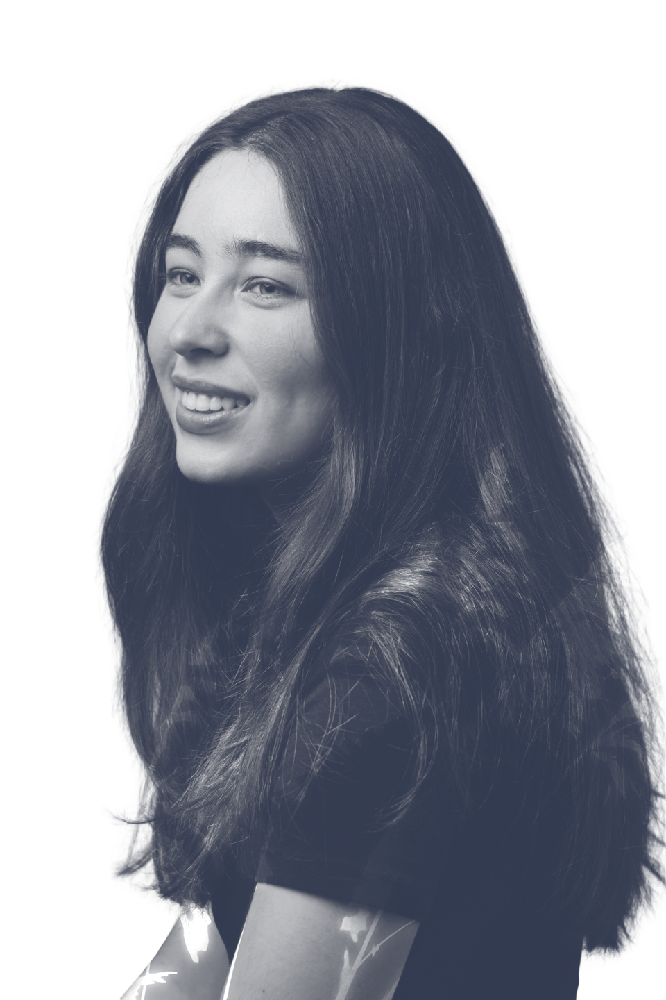

Isabella Hodges is a senior graphic design student at San Diego State
University.
She is involved at many organizations on and off campus but she prides herself her school’s student-run
newspaper
“The Daily Aztec” as a Graphics Editor, managing print, designs published on the website, and a team of
designers.
Besides design, Isabella loves reading, hanging out at the library with friends, hiking,
binging of cult classic movies and watching the waves at the beach.
In the future, Isabella hopes to work for NGOs, media publication companies or producing branding media and
content for businesses that serve a good cause for the local or global community. If you want to learn about
her,
click the button below to read her FAQ's. Additionally, take a look at a timeline of her school work
below!
I'll be graduating from SDSU in the Spring of 2026!
After graduation I hope to intern at a local company. However, I hope to take the summer to relax and enjoy the summer break.
My favorite class that I took at SDSU was digital photography. I enjoyed reaching out with the community to arrange shoots and to learn about the technical aspects of the camera.
The work I have produced for The Daily Aztec is what I am most proud of. Having my page layouts help showcase another person's designs or writing gives me pride.